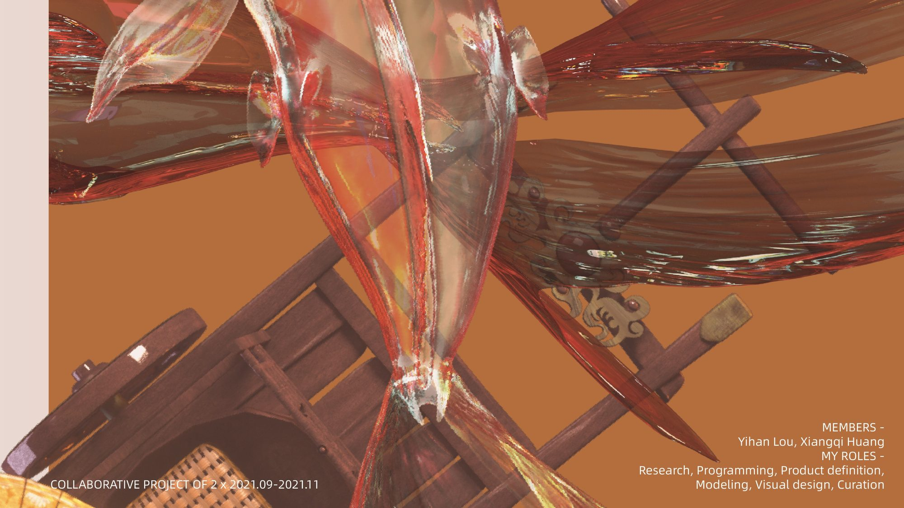
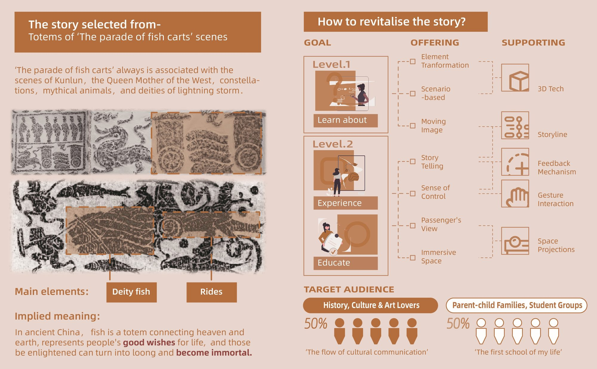
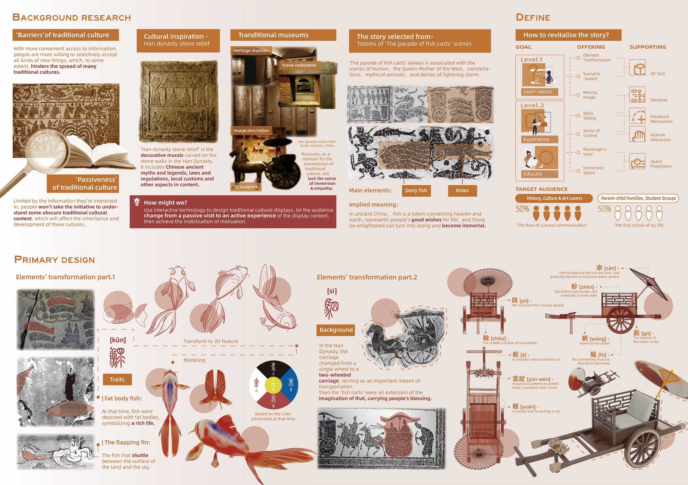
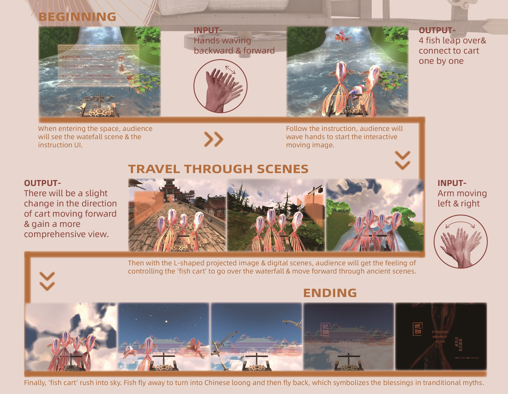
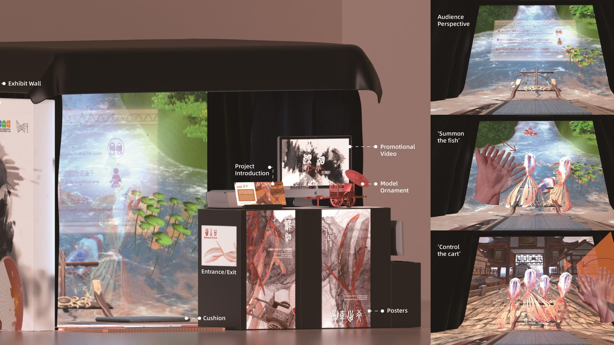

传统文化是一个恒常的时代话题，但信息越便利，年轻人越倾向于有选择地接收 —— 传统中那些冷僻的部分，很少再有人愿意主动看一眼。髡司用一套机制、而非说教来回应它：它把汉代画像石中「鱼车出行」这一个母题提出来，将其中两个元素重建为可进入的 3D 世界，再把缰绳交给观众。挥手之间，神鱼跃入、鱼车启程，载着观众越过瀑布、穿过古林与古镇，直至云端 —— 让传统文化的被动观看者，成为它的主动参与者。
00结论摘要
这个项目是什么，以及它为什么成立髡司是一件以汉代画像石单一母题构建的交互式数字装置。观众站在 L 形投影幕前，以一个挥手动作启动作品：神鱼跃过、逐一与鱼车相连，鱼车继而载着观众越过瀑布、穿过古镇，最终驶入云端的仙宫 —— 随后鱼群化作中国龙飞返，带回传统神话中的祝福。作品不是对文物的数字复刻，而是把观众从「观看者」变成「故事正发生在其身上的人」。
- 它回应的是被明确指出的问题，而不是想象出来的问题。研究指出了传统文化面临的两重障碍：人们只会选择性地接受自己本就感兴趣的内容；对于冷僻的内容，不会主动去了解。装置所针对的，正是这份「被动」，而不是素材的匮乏。
- 对象是一件具体、有年代的文物，而不是泛泛的「中国文化」。一切都源自汉代画像石「鱼车出行」这一场景 —— 它通常与昆仑、西王母、星宿、神兽，以及雷雨之神相联系。
- 让它变得可读的，是转化的工作。神鱼由画像石上读出的两个特征重建为 3D 角色 —— 象征富足生活的「肥身」，以及穿行于地与天之间的「展鳍」；车则按部件逐一重建，于是观众驾驶的是一件有解剖结构的设计物，而不是一件道具。
- 界面就是身体本身。作品没有手柄：进入空间即触发鱼群，观众的手与手臂动作负责召鱼、驱车与转向。在这里，沉浸感是一种操作方式，而不是一层装饰。
| 形式 | 交互式数字装置 —— L 形投影幕与手势交互 |
| 年份 | 2021.09 – 2021.11 |
| 团队 | 两人合作项目 —— Yihan Lou、Xiangqi Huang |
| 我的分工 | 研究 · 编程 · 产品定义 · 建模 · 视觉设计 · 策展 |
| 核心问题 | 如何以当代的方式诠释汉代「鱼车出行」的传统文化故事 |
| 交付物 | 背景研究 · 元素转化与 3D 建模 · L 形投影装置 · Kinect v2 手势交互 · 五个 Unity 实时场景 · 展览与策展 |
01背景研究
专业方向：文化研究与问题框定在动手设计之前，项目先弄清楚一个问题：为什么传统文化被谈论得这么多，却被理解得这么少。三项发现塑造了整个设计任务 —— 而第三项，把一次展览变成了一次交互。
传统文化的壁垒
获取信息越便利，人们越倾向于有选择地接受新事物 —— 这在一定程度上阻碍了许多传统文化的传播。
传统文化的被动性
人们受限于自己本就感兴趣的信息范围，不会主动去了解晦涩的传统文化内容 —— 这使传统文化在代际之间的传承与发展受到阻碍。
博物馆缺乏沉浸与共情
博物馆是展示传统文化的媒介，但文物陈列、石材修复，或是一段说明文字配一尊十层石雕，都很难留出共情的空间 —— 观众读到了文化，却没有走进它。
研究得出的设计任务：我们该如何用交互技术设计传统文化的展示，让观众从被动参观走向主动体验，从而实现动机的调动？正是这个问题，把一块静态的画像石，变成了一件由观众操作的装置。

02主体设计
专业方向：角色与器物设计母题被拆解为两个元素，每一个都按其自身的历史逻辑重建，而不是随意风格化。名字本身就有分量：[髡] 是鱼，[司] 是车，合起来构成作品的名字。
神鱼，重建为 3D 角色
两个特征直接取自画像石并带入模型：肥身 —— 当时人们把鱼刻得浑圆饱满，以象征富足的生活；展鳍 —— 指在陆地表面与天空之间穿行的鱼。它的色彩，则取自汉代本身所推崇的用色。
双轮车，按部件逐一重建
汉代车制由单轮演变为双轮车，并成为重要的交通工具；鱼车正是由此延伸出的想象，承载着人们的祝福。它按真实的部件结构建模 —— 舆（车厢）、辋/毂/辐（车轮）、轭（挽具）、盖（车篷）、辀（车辕），以及逐渐演变为装饰与身份象征的軎。
作品需要观众去「驾驶」这件器物，因此器物的模型必须在任何角度、任何近距离下都成立。平面插画在车一转的瞬间就会塌掉；按部件建模，才能让观众站到车后并操控它 —— 正是这个设计决定，让交互得以成立。

03交互构想与实验
专业方向：交互与空间设计装置必须让第一次到访的观众在几秒之内就行动起来，而且不必先读说明书。做成这件事的是两个决定：空间怎么搭，以及交互怎么开始。
黑场中的 L 形投影幕
空间中采用黑色吸光材料，消除反射、形成沉浸式环境。L 形幕被刻意用来在有限的空间里制造透视效果：一台投影机驱动正面墙幕，另一台驱动地面幕；并以一处标注的「观看点」界定交互区。
Kinect v2 读取全身
Kinect v2 运动传感器检测观众的全身姿态与动作，因此交互不需要任何手持设备 —— 观众自身的位置与手势就是输入。
交互如何开始
1 —— 观众进入空间时，设备识别到人，一条真实的鱼跃过。2 —— 走到幕前，会逐一召唤出鱼与车。3 —— 鱼车随后载着观众驶向神庙，越过大海，承载着传统神话中的祝福。
搭建与初步测试
一个初级 demo 用来测试鱼车能否飞起，以及能否通过手腕的手势来操控。学生以手势操控鱼车，同时演示交互方式，并依据测试结果优化空间布局、程序与手势识别。
故事是一段向前的旅程，平面幕会把它当作一幅画，隔在一臂之外。L 形把观众包裹进投影出的世界里，让场景读起来是一个空间而不是一张图；而手势则移除了观众与故事之间最后一件硬件 —— 观众自己的身体，成了鱼车的缰绳。
04制作流程
专业方向：生产管线制作以四条互相喂养的轨道推进 —— 美术、概念、编程与测试 —— 并且共享同一个约束：媒体必须为一块「有形状的幕」而创作，而不是为一个矩形。
建模、贴图与动画
建模与贴图绘制、以 Unity Timeline 制作动画，以及场景优化。呈现形式 —— L 形投影幕 —— 在这一环节被确定下来，包括为营造 3D 效果、制造「行走感」所需的镜像处理。
交互流程
元素与场景在这一环节被规划与设计。主要交互流程为：1 走到观看点，2 召唤鱼群，3 操控鱼的移动，4 享受多感官体验 —— 这条流程被写成观众一踏入空间就能理解的形态。
实时系统与手势输入
编码与调试，并进行参数优化：以 3D 技术在 Unity 中实现可视化与交互，画面经 NDI 输出，配合 Kinect 手势输入与动画，实时驱动场景。
反馈、搭建与策展
测试反馈与设计优化会回到前面的轨道，随后进入搭建与策展 —— 这一环节把可运行的样机，变成一件陌生人也能走进去操作的展览。
05最终演示
L 形投影幕上的广角主场景完成的作品是一段连续不断的旅程。它从交互说明开始，鱼车一路向前越过瀑布、穿过古镇；结尾则向外展开，在观众离场后回到初始画面。
- 场景 1 —— 瀑布与山丘。旅程从画像石中的水开始。
- 场景 2 —— 远古森林。鱼车在密集、未经驯化的地形中前行。
- 场景 3 —— 古镇。鱼车驶过一片被建造、被居住过的世界。
- 场景 4 —— 云端仙宫。旅程从大地升起，进入天空 —— 神话的目的地。
- 场景 5 —— 化龙而返，带回祝福。鱼群飞走，化作中国龙再飞回 —— 正是传统神话所承载的祝福。

06交付
展览与现场反馈作品最终以一处完整的展位交付，而不只是一块屏幕 —— 空间经过策展，让此前从未听过这个母题的观众，也能被讲解、被记住，并被再次带入。
展位
展墙 · 项目介绍 · 宣传影片 · 模型摆件 · 海报 · 入口地垫 · 坐垫 —— 让观众先遇见故事，再遇见屏幕。
被记录下来的两次交互
「召唤鱼群」与「操控鱼车」都以观众自身的视角被记录下来 —— 这是「无需讲解员，交互也能读得懂」的证据。
通过这次交互体验，年轻人对传统文化故事有了更好的理解 —— 也因此更有可能去传承与发展它。展览期间观众主动参与互动，作品也获得了中国文化领域专家的认可，并收到了进一步发展的建议。
